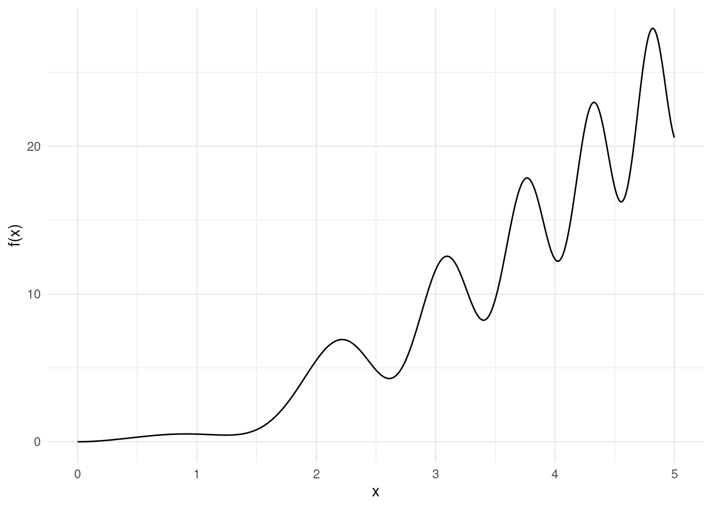
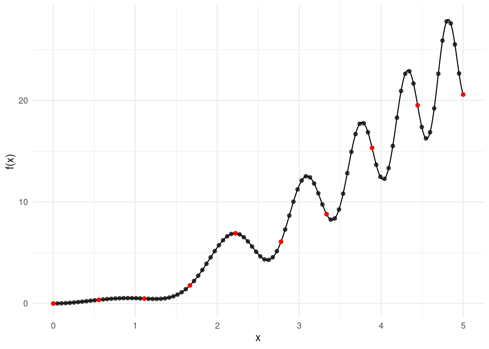
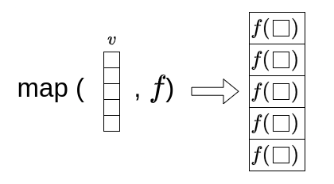
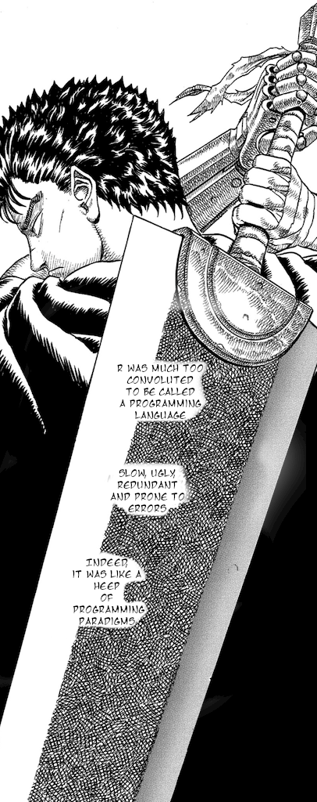

4 Functional Programming and Linear Algebra
4.1 An intro to Functional Programming
We have seen so far two concepts from past week on how to run functions over collections of objects (in our case vectors). From this section we learned how to run a function on a vector, whilst last week, we learned how to implement looping, with for or while cycle, changing things as you go. We learned, most importantly, that we should use the for cycle if and only if we have state. Well, this is not my personal opinion only, as a matter of fact, there’s a programming philosophy called functional programming. Hadley, in his Advanced R book (sources in the index), gives a beautiful definition that sums up the properties of a functional programming language:
Functional languages have first class functions. This means that functions are the primary building blocks. In this style, you can do a lot with functions. For example, you can treat functions just like vectors: you can assign them to variables, store them in lists, pass them as arguments to other functions, create them inside functions, and even return them as the result of a function.
In functional languages functions are pure. This means that they satisfy the following two properties:
The output of a function depends only on its inputs. This means if you call a function with the same inputs, you’ll always get the same output.
A function doesn’t change anything outside of it, like a global variable (from the global enviroment), or do something like writing to disk or displaying to the screen. These are called side-effects.
Funny enough, he quotes Stroustroup, the father of C++:
“To become significantly more reliable, code must become more transparent. In particular, nested conditions and loops must be viewed with great suspicion. Complicated control flows confuse programmers. Messy code often hides bugs.”
— Bjarne Stroustrup

The father of c++
In a way you have already written in a functional programming way from the beginning of this module, with the exception of the loops in the past chapter. However, in this chapter, we will be introducing a couple of more concepts that should get rid of for cycles most of the times!
4.1.1 Lambda Functions and Function Factories
A lambda function, also known as an anonymous function, is a function that is defined without a name, e.g. a function assigned to a variable. Lambda functions can have any number of arguments but only one expression, which is immediately evaluated and returned.
- In R, we assign functions to variables by default (one of the reasons I prefer it as a language). Hence the only difference between a function and a lambda function (as you will see), is that a lambda function is only one expression long, so we don’t need to use the brackets
{}. Recently from version 4.1, the lambda notation has been replaced by the\keyword, e.g.function()is equivalent to\(). - In Python lambda functions are defined using the
lambdakeyword, whilst normal functions are defined using thedefkeyword. These will need to be one line long, and can be assigned to a variable.
In both languages we can avoid the return statement, which makes them very easy and compact to write.
For example:
In the above examples, we’ve defined a lambda function add_two_numbers in both R and Python that takes two arguments x and y, and returns their sum. When we call this function with 1 and 2, as we would expect from any regular function, it returns 3.
Now the cool stuff, as mentioned above, is that you can have a function that takes a number (or vector) as an input and return a function as output. This is often referred to as a function factory. To do so, we have to define functions inside functions, and then return those newly defined functions. Well, lambda functions, being compact, are the perfect candidate for this task.
Here is an example:
Note that in the Python version, we used power as the variable name, as pow is actually a built-in function in Python.
In the above examples, we’ve defined a function factory make_power in both R and Python that takes a number exponent as input (the exponent of our exponentiation function we want to built) and returns a function pow that raises its input x to the power of exponent. When we call this function factory with the argument 3, it returns a function cube that cubes its input. When we call this cube function with the argument 2, it returns 8. Similarly, we create a function to_the_tenth that returns a function capable of doing the power of 10 of an input number.
This technique, sometimes referred as currying, is often used in functional programming to transform a function that takes multiple arguments into a series of functions that each take a single argument. It works with existing functions as well, and can be extremely useful in many situations, in particular when you have many arguments and you’re only interested in changing one. Let’s give a longer example.
Let’s have a look at this weird function:
\[ f(x) = x^2 + x * \sin(x + 1.5 x^2) \]

Say we want to study numerically its local maxima, and to do so we want to evaluate the function on two grids of different resolutions: for example, a grid with 10 values (in red), and another grid with 100 values (in black):

This is a task that you will find yourself doing a lot of times when designing numerical simulations. With currying, we can code multiple grids in a neat and elegant fashion:
R
# overloading the arguments of seq to return
# a lambda that takes an upper argument
grid_factory <- function(len) {
make_grid <- \(up) seq(from=0, to=up, length.out = len)
return(make_grid)
}
# our function
f <- \(x) x^2 + x * sin(x - 1.5 * x^2)
### low resolution grid maker
g1 <- grid_factory(10)
# max up to 2.5 (low res)
y <- f(g1(2.5))
max(y)## [1] 6.916713## [1] 12.53### high resolution grid maker
g2 <- grid_factory(100)
# max up to 2.5 (high res)
y <- f(g2(2.5))
max(y)## [1] 6.916713## [1] 17.83874Python
import numpy as np
# overloading the arguments of linspace to return
# a lambda that takes an upper argument
def grid_factory(length):
make_grid = lambda up: np.linspace(0, up, length)
return make_grid
# our function
def f(x):
return x**2 + x * np.sin(x - 1.5 * x**2)
### low resolution grid maker
g1 = grid_factory(10)
# max up to 2.5 (low res)
y = f(g1(2.5))
y.max()## 6.916712586188865## 12.52999905034901### high resolution grid maker
g2 = grid_factory(100)
# max up to 2.5 (high res)
y = f(g2(2.5))
y.max()## 6.916712586188865## 17.838742938195722Note that len is a built-in function in Python, so we use a different name for the variable.
In this example, we define a grid_factory function that takes a single argument len and returns a lambda function that takes an upper argument up. The lambda function generates a sequence of numbers between 0 and up with a specified length len.
We then define our function f to evaluate our expression \(x^2 + x * sin(x - 1.5 * x^2)\).
We use the grid_factory function to create two functions to compute grids of different resolutions, g1 and g2, and use these grids to compute the maximum value of f(x) for different values of x.
4.1.1.1 Functions as arguments
Recall you can pass down functions as arguments too. To do so, you will need to pass down just the function name, e.g. f, rather then the function evaluated, f(...).
Say that we want to generalise the previous code to work with multiple different functions, then, it would make sense to write another function that takes said functions as input, and applies the grid evaluation:
R
# this function will take a function and
# a grid function to evaluate some values
# up to one given point
max_over_grid <- function(f, grid, up) {
y <- f(grid(up))
max(y)
}
# our old function
f_1 <- \(x) x^2 + x * sin(x - 1.5 * x^2)
# a couple of other functions
f_2 <- \(x) x^3 - x * cos(x - 1.5 * x^2)
f_3 <- \(x) log((x+0.1)^2) + x * sin(x - 1.5 * x^2)
# run the functions on the grid
# recall what g1 was?
max_over_grid(f_1, g1, 4)## [1] 12.53## [1] 62.36767## [1] 5.184221Python
# this function will take a function and
# a grid function to evaluate some values
# up to one given point
def max_over_grid(f, grid, up):
y = f(grid(up))
return max(y)
# our old function
f_1 = lambda x: x**2 + x * np.sin(x - 1.5 * x**2)
# a couple of other functions
f_2 = lambda x: x**3 - x * np.cos(x - 1.5 * x**2)
f_3 = lambda x: np.log((x+0.1)**2) + x * np.sin(x - 1.5 * x**2)
# run the functions on the grid
# recall what g1 was?
max_over_grid(f_1, g1, 4)## 12.52999905034901## 62.36767175274643## 5.184220740234336Try swapping g1 for g2 and see what happens!
4.1.1.2 Fizzbuzz v10299384
We’re about to create a weird overly-engineered version of FizzBuzz: fizzbuzz_v10299384 (the vector solution we had in Chapter 2 was pretty elegant already, so use that in coding interviews). What will follow is an example for you to break to illustrate the possibilities of functional programming.
R
# A lambda that prints a message
# given a remainder
remainder_printer <- \(p, q, message)
if (p %% q == 0) message else ""
fizzbuzz_v10299384 <- function(x) {
f <- \(printer)
\(x) paste0(printer(x, 3, "fizz"), printer(x, 5, "buzz"))
# creating a new function and calling it directly!
out <- f(remainder_printer)(x)
if (nchar(out) == 0)
out <- x
out
}
fizzbuzz_v10299384(15)## [1] "fizzbuzz"## [1] 7Python
# A lambda that prints a message given a remainder
remainder_printer = lambda p, q, message: message if p % q == 0 else ""
def fizzbuzz_v10299384(x):
f = lambda printer: lambda x: printer(x, 3, "fizz") + printer(x, 5, "buzz")
# creating a new function and calling it directly!
out = f(remainder_printer)(x)
if len(out) == 0:
out = str(x)
return out
fizzbuzz_v10299384(15)## 'fizzbuzz'## '7'What on earth is going on? Well, let’s try to break it down:
remainder_printeris a lambda function that takes three arguments:p,q, andmessage. It checks ifpis divisible byq(i.e.,pmoduloqequals0), and if so, it returnsmessage; otherwise, it returns an empty string.fizzbuzz_v10299384is a function that takes one argument:x, our number, and returns the FizzBuzz string.- It defines a lambda function
fthat takes one argument:printer(which is expected to be a function). It returns a new lambda function that takes one argumentx, our number to check. Recall, that a function can take another function as input and return a new function by overloading its arguments. - The function returned by f, is another lambda: this returns the concatenation of the results of calling
printerwithx,3, and"fizz", and withx,5, and"buzz". - We we then call
fwithremainder_printeras the argument, this will return a lambda that, as described above, will concatenate the fizz and buzz strings. The first step is done withf(remainder_printer). This new unnassigned function is then immediately called withxviaf(remainder_printer)(x). - If the result of this operation is an empty string, we return
xinstead. The condition on the length of the string is checked withncharin R andlenin Python.
- It defines a lambda function
This could have been shortened of at least a couple of statements (try it yourself!). But this should have showcased how many things we can do with functions. In the next exercise, we are going to use some of these concepts to build the ultimate FizzBuzz program (not underselling).
Before doing that, however, we need to introduce the map and reduce operations.
4.1.2 The map operation
The map operation is a function that takes a function and a vector as input, and returns a vector. Each element of the output vector is the result of applying the input function to the corresponding element of the input vector:

This allows us to apply a function to each element of a vector without having to write a loop. We have already done this when running a function on a vector, however, as we are going to see in a moment, map is a much more general statement. In fact, there are many functions in R and python that are not vectorized, meaning they don’t naturally handle vector inputs. If you try to apply a non-vectorized function directly to a vector, you might get a bug or unexpected results.
Let’s consider a simple function that squares a number. We will apply this function to a vector of numbers using the map operation in both R and Python:
R
# import the purrr library
library(purrr)
# this is how we import libraries in R!
# Define a function that squares a number using the factory above
square <- make_power(2)
# Create a vector of numbers
numbers <- 1:5
# Use the map function to apply the square function to the vector
squares <- map_dbl(numbers, square)
squares## [1] 1 4 9 16 25In the above examples, we’ve defined a function square that squares its input using the make_power function. We then created a vector (or list in Python) numbers with the numbers from 1 to 5. We used the map function to apply square to each element of numbers, resulting in a new vector squares that contains the squares of the numbers.
NOTE: For R Users: The map function is part of the purrr package, so you need to import it with library(purrr); you can have this code at the start of the script. The map function in R takes as argument the vector first, and then the function. The map function in R returns a list by default. A list in R is similar to a vector, but unlike a vector, a list can contain elements of different types. This means a list can be a collection of numbers, vectors, matrices, characters, functions, potatoes, onions, parupzluplups and so on. The map function defaults to a list, as, a priori, does not know what the output of a function could be. If you want a vector as output, you should use the type-specific map functions like map_lgl, map_int, map_dbl, and map_chr. For this reason, above, we used the map_dbl, as we wanted a vector of double precision numbers. Try to swap the function map_dbl for map_chr and see what happens. Also, note that map is implemented natively in R using the apply family of functions, see help(apply) for more details. The code above would have been:
Where now the function and the vector are swapped in the argument. Also, we are using sapply as this returns a vector, whilst the simple apply function returns a list.
NOTE: For Python Users: The map function in Python takes as argument the function first, and then the vector. In Python, the map function returns a map object, which is an iterator that yields results on demand. This means that the map function doesn’t actually compute the results until you iterate over the map object. This can be very efficient for large inputs, as it allows the computation to be spread out over time. However, if you want to see all the results at once, you need to convert the map object to a list, which is what the list function does. So when you see list(map(...)) in Python, it means “apply this function to each element of this iterable, and give me a list of the results right away”. The map operation in Python can also be achieved with list comprehensions, which provide a more “Pythonic” way to create lists based on existing lists. Here’s how you can rewrite the previous example using a list comprehension:
# Use a list comprehension to apply the square function to the list
squares = [square(x) for x in numbers]
squares## [1, 4, 9, 16, 25]In this example, square(x) for x in numbers is a list comprehension that applies square to each element of numbers. You can read it as: “Run square of x for every x in numbers”, which is very similar to writing in maths \(x^2 \ \text{for} \ x \in N\). The result is a new list squares that contains the squares of the numbers.
Equivalent Shorter Statements
Of course, the advantage is that you can write very compact code with maps, lambdas and function factories! So far, I have been expanding lines upon lines, to make sure that everything is clear, however you could have done the above tasks with a one liner:
4.1.2.1 Exercise
- Create a vector of the first 15 natural numbers.
- Run the
fizzbuzz_v10299384function on the vector above and see what happens. It should work, right? No? - Now, run
fizzbuzz_v10299384with map on the same vector, and see the result. - Lastly, research the two function factories
Vectorisedandnp.vectorise, try to vectorisefizzbuzz_v10299384and run it as you did in point 1. Did you fix the issue?
4.1.2.2 Map 2
There’s a lot of examples in cinema where the sequel is arguably better then the first one, like Shrek 2, Cars 2, Jaws 2, The second Star Wars trilogy, The Hangover 2, Bee Movie 2, Karate Kid 2… the list is endless!
Well, even in programming map2 is better then map. You might be in fact wondering: what’s the point of having map when we already have vectorised functions? Well, map2 is the answer. The map2 operation is a function that takes two vectors and a function as input, and returns a vector. Each element of the output vector is the result of applying the input function to the corresponding elements of the input vectors. In a vectorized function, on the other hand, there’s no straightforward way of passing two arguments to a function.
Let’s consider a simple function that adds two numbers. We will apply this function to two vectors using the map2 operation (in R) and the map operation (in Python it can take as many arguments as necessary by default):
In the above examples, we’ve defined a function add that adds its two inputs. We then created two vectors (or lists in Python) numbers1 and numbers2. We used the map2/map function to apply add to each pair of elements from numbers1 and numbers2, resulting in a new vector sums that contains the sums of the numbers.
Shorter statements. We can write the map2 statements above in a very compact way again:
Note for Python Users: The map operation with two arguments can also be achieved in a more “Pythonic way” with list comprehensions. Here’s how you can rewrite the previous example:
# Use a list comprehension to apply the add function to the lists
sums = [add(x, y) for x, y in zip(numbers1, numbers2)]
sums## [11, 13, 15]In this example, the list comprehension statement relies on the zip function. zip is used to pair up the elements from numbers1 and numbers2. Try to run zip(numbers1, numbers2) alone to see the output! I personally find that the map function is more readable, however you should be familiar with both ways as you will be encountering both if you keep programming with Python. One other advantage is that the map function is inherently flexible and can take as many arguments as necessary. This is because it’s designed to apply a function to multiple iterables in parallel. If you pass more than one iterable to map, it will pass corresponding elements from each iterable to the function. This allows you to easily apply a function to multiple arguments.
Note for R Users map2 is limited to two arguments, however in purr, we do have a map function that can take as many arguments as necessary: the pmap function. The pmap function has a slightly different notation, as it takes a list of vectors (or a list of lists) and a function as input, and returns a list. Each element of the output list is the result of applying the input function with the corresponding elements of the input vectors as arguments. Here’s an example:
# Define a function that adds two numbers
add <- \(x, y) x + y
# Create a list of two vectors of numbers
numbers <- list(c(1, 2, 3), c(10, 11, 12))
# Use the pmap function to apply the add function to the vectors
sums <- pmap_dbl(numbers, add)
sums## [1] 11 13 15It’s important to note that all vectors in the list passed to pmap should be the same length, as pmap will recycle shorter vectors to match the length of the longest vector, which can lead to unexpected results. If the vectors are not the same length, you should adjust them to be the same length before using pmap.
4.1.3 Reduce Operation
The reduce operation is a function that takes a binary function (a function that takes two arguments) and a list or vector as input, and returns a single value. It works by applying the function to the first two elements of the list, then applying the function to the result and the next element, and so on, until it has processed all the elements of the list.
This operation is called reduce because it reduces a list of values down to a single value. It’s also known as fold, accumulate, compress, or inject in other programming languages.
To give an example, let’s use the reduce operation to compute the dot product of two vectors. We have seen this already in Chapter 2.4, however, this time, we will implement the function ourselves! We can compute this using the map2 operation to multiply the components and the reduce operation to sum the results:
R
# Define two vectors
v1 <- c(1, 2, 3)
v2 <- c(10, 11, 12)
# Use the map2 function to multiply the components of the vectors
products <- map2_dbl(v1, v2, `*`)
# Use the reduce function to sum the products
dot_product <- reduce(products, `+`)
print(dot_product)## [1] 68Python
from functools import reduce
# Define two lists
v1 = [1, 2, 3]
v2 = [10, 11, 12]
# Use the map function to multiply the components of the lists
products = list(map(lambda x, y: x * y, v1, v2))
# Use the reduce function to sum the products
dot_product = reduce(lambda x, y: x + y, products)
print(dot_product)## 68In the above examples, we’ve used the map2/map operation to multiply the components of two vectors, and the reduce operation to sum the results, computing the dot product of the vectors.
Note for Python Users: The reduce operation in Python is part of the functools module, so you need to import it with from functools import reduce.
4.1.4 Exercise: Implement a Generic FizzBuzz Function
Ok, this is going to be great. The ultimate FizzBuzz. The final boss. You are a mathematician, and mathematicians generalize things. In this exercise, you are asked to generalize FizzBuzz. Solve it all. You should write a function that takes three arguments: a vector of numbers, and a vector of primes, and a vector of phrases. The vectors of primes and phrases should be of the same length, not necessarily the same length of the vector of numbers. The function should return a vector of the same length as the input vector of numbers. Each element of the output vector should be obtained by replacing each number in the input vector with the corresponding phrase if the number is divisible by the corresponding prime. If a number is divisible by more than one prime, the complete phrase should be formed by concatenating the phrases. If a number is not divisible by any of the primes, the number itself should be returned as a string.
For example, the simple FizzBuzz, should be, then, obtained via:
Here’s the function signature in R to get you started:
As a test case, consider the following call to your function:
or in Python:
NOTE for R users Please check the Challenges chapter, for a last fizzbuzz challenge in Section @{gen_fizzbuzz_short}!
4.1.5 State in Functional Programming
The reduce operation is a way of performing a recursion operation in functional programming. It applies a binary function to the first two elements of a list, then applies the function to the result and the next element, and so on, until it has processed all the elements of the list. This is essentially a function concatenation on the result of a previous iteration. Go and have a better look at Figure @ref(fig:reduce_scheme)!
This brings us to the concept of recursion, which is a method where the solution to a problem depends on solutions to smaller instances of the same problem. In functional programming, recursion is often used as a way to deal with state.
Let’s illustrate how the recursion works with the same Fibonacci series example recursion. We can define a function called \(f\) that:
\[ f(n)= \begin{cases} n,& \text{if } n \leq 1\\ f(n-1) + f(n-2), & \text{otherwise} \end{cases} \] This function, for a given \(n\), will return the corresponding \(r_n\) value of the Fibonacci sequence (see past week).
Now, the cool thing is: it is possible to write this exact statement as a program too! Have a look at the code below:
In the above examples, we’ve defined a recursive function fibonacci that computes the Fibonacci series. We then used this function compute Fibonacci series: recall that the fibonacci function only returns the \(n^{th}\) element of the series, so to get the first 10 numbers we need a map statement.
However, it’s important to note that while recursion is a powerful concept, it can be impractical in practice due to its high computational complexity and the risk of running out of memory for large inputs. Most of the tasks in functional programming are either solved via map and reduce operations or, eventually, through for loops.
map and reduce are generally more efficient, safer, and can handle larger inputs. For this reason, my friends, this is the last time we will be seeing recursions in this module. Brief but intense.
4.1.5.1 Exercise: Fixing GPT Shenanigans
Welcome to the future! As of January 2023, the most advanced Generative Pre-trained Transformer (like GPT-4) is about as skilled as a newbie coder.
In your journey, you’ll definitely cross paths with these models if you haven’t already. They’re cool, they’re trendy, everyone is talking about them, and they’re putting at risk half of the desk-job market. But remember, they’re not flawless.
To show you what I mean, I challenged GPT-4 to code the Fibonacci sequence using a reduce statement. Check out the R and Python solution it came up with below. I copied the scripts without modifications:
R
library(purrr)
# Define a function to compute the next number in the Fibonacci series
next_number <- function(prev_numbers) {
sum(tail(prev_numbers, 2))
}
# Compute the Fibonacci series up to a given length
fibonacci_series <- function(length) {
initial <- c(0, 1)
fib_sequence <- reduce(rep(0, length - 2), .init = initial, .f = next_number)
return(fib_sequence)
}
# Print the first 10 numbers of the Fibonacci series
print(fibonacci_series(10))Python
from functools import reduce
def fibonacci_series(length):
initial = ([0, 1] + [0] * (length - 2))
fib_sequence = reduce(lambda prev, _: prev + [prev[-2] + prev[-1]], range(length - 2), initial)
return fib_sequence
length = 10 # Change this to the length you want
print(fibonacci_series(length))You can see it is clearly broken. Imagine you’re now in the hot seat, interviewing for a top-tier IT company. They slide this code across the table and ask you to either debug the AI’s solution or come up with a better one. Could you rise to the challenge and secure the job?
4.2 Doing Linear Algebra
4.2.1 Building Matrices
In the previous chapters, we have covered some basics on how to perform operations on one-dimensional vectors, and the dot product. Now, we are going to extend our understanding to two dimensions with matrices.
A matrix is a mathematical term for a two-dimensional array of numbers, while a vector is a one-dimensional array. In other words, you can think of a matrix as a homogeneous vector of vectors of doubles, both in R and Python.
Let’s see how to create a 4x4 matrix in R and Python:
R
# Create a 4x4 matrix in R
matrix_by_row <- matrix(1:16, nrow=4, ncol=4, byrow = TRUE)
matrix_by_row## [,1] [,2] [,3] [,4]
## [1,] 1 2 3 4
## [2,] 5 6 7 8
## [3,] 9 10 11 12
## [4,] 13 14 15 16Python
# Create a 4x4 matrix in Python
matrix_by_row = np.arange(1, 17).reshape(4, 4)
# alternatively, you can write it by hand as a list of lists
matrix_by_row = np.array([
[1, 2, 3, 4],
[5, 6, 7, 8],
[9, 10, 11, 12],
[13, 14, 15, 16]
])
matrix_by_row## array([[ 1, 2, 3, 4],
## [ 5, 6, 7, 8],
## [ 9, 10, 11, 12],
## [13, 14, 15, 16]])In the above examples, we’ve created a 4x4 matrix filled by rows. You can also fill the matrix by columns by setting byrow = FALSE in R, or by reshaping a range in Python (reshape will fill automatically by row).
Additionally, you can create a matrix by binding vectors together. In R, you can use cbind() to bind vectors as columns or rbind() to bind vectors as rows, whilist in python you can use np.column_stack() as columns and np.row_stack() as rows:
R
# Create a matrix by binding vectors in R
v1 <- c(1, 2, 3, 4)
v2 <- c(5, 6, 7, 8)
v3 <- c(9, 10, 11, 12)
v4 <- c(13, 14, 15, 16)
# Bind vectors as columns
matrix_by_col <- cbind(v1, v2, v3, v4)
matrix_by_col## v1 v2 v3 v4
## [1,] 1 5 9 13
## [2,] 2 6 10 14
## [3,] 3 7 11 15
## [4,] 4 8 12 16Python
# Create a matrix by binding vectors in Python
v1 = np.array([1, 2, 3, 4])
v2 = np.array([5, 6, 7, 8])
v3 = np.array([9, 10, 11, 12])
v4 = np.array([13, 14, 15, 16])
# Bind vectors as columns
matrix_by_col = np.column_stack((v1, v2, v3, v4))
matrix_by_col## array([[ 1, 5, 9, 13],
## [ 2, 6, 10, 14],
## [ 3, 7, 11, 15],
## [ 4, 8, 12, 16]])In the above examples, we’ve created a 4x4 matrix by binding four vectors as columns. You can also bind vectors as rows by using rbind() in R, or np.vstack() in Python.
Now, let’s illustrate the transpose operation. Recall that the transpose of a matrix is obtained by flipping it over its diagonal. This switches the row and column indices of each element. In R, you can use the t() function to transpose a matrix, while in Python, you can use the T attribute or the transpose() function.
Let’s compare the matrices created above with their transposes:
R
## [,1] [,2] [,3] [,4]
## [1,] 1 5 9 13
## [2,] 2 6 10 14
## [3,] 3 7 11 15
## [4,] 4 8 12 16# comparing the elements of the transposed
# matrix by row with that filled by columns
t(matrix_by_row) == matrix_by_col## v1 v2 v3 v4
## [1,] TRUE TRUE TRUE TRUE
## [2,] TRUE TRUE TRUE TRUE
## [3,] TRUE TRUE TRUE TRUE
## [4,] TRUE TRUE TRUE TRUEPython
## array([[ 1, 5, 9, 13],
## [ 2, 6, 10, 14],
## [ 3, 7, 11, 15],
## [ 4, 8, 12, 16]])# comparing the elements of the transposed
# matrix by row with that filled by columns
matrix_by_row.T == matrix_by_col## array([[ True, True, True, True],
## [ True, True, True, True],
## [ True, True, True, True],
## [ True, True, True, True]])As you can see, unsurprisingly, the transpose of the filled by row has all elements equals to the one filled by column.
4.2.2 Matrix Operations
As with vectors, we can do operations with matrices. We’ll start by creating a simple 3x3 matrix, and a 3x1 vector.
R
Now, as in chapter two, R and Python (assuming you’re using numpy) will be able to handle both:
Element-wise Operations: These operations are performed on corresponding elements of matrices. This is simply done by calling a given function on a matrix. There’s few examples below, including element-wise multiplication, also known as the Hadamard product.
Matrix Multiplication: Remember, the dimensions of the matrices must be compatible for these operations to be valid: when we multiply two matrices, the number of columns in the first matrix should be equal to the number of rows in the second matrix. If they’re not, you’ll get an error. The resulting matrix has each element as the dot product of the corresponding row and column from the input matrices.
Let’s see these operations in action:
R
## [,1] [,2] [,3]
## [1,] 2 8 14
## [2,] 4 10 16
## [3,] 6 12 18## [,1] [,2] [,3]
## [1,] 1 16 49
## [2,] 4 25 64
## [3,] 9 36 81## [,1] [,2] [,3]
## [1,] 1 16 49
## [2,] 4 25 64
## [3,] 9 36 81## [,1] [,2] [,3]
## [1,] 30 66 102
## [2,] 36 81 126
## [3,] 42 96 150## [,1]
## [1,] 30
## [2,] 36
## [3,] 42Python
## array([[ 2, 4, 6],
## [ 8, 10, 12],
## [14, 16, 18]])## array([[ 1, 4, 9],
## [16, 25, 36],
## [49, 64, 81]])## array([[ 1, 4, 9],
## [16, 25, 36],
## [49, 64, 81]])## array([[ 30, 36, 42],
## [ 66, 81, 96],
## [102, 126, 150]])## array([14, 32, 50])## array([14, 32, 50])4.2.2.1 Inversion, Eigenvalues and Eigenvectors
For this section, we’ll reuse the matrix A from the previous examples. The rank of A, is, however, 2, as the third column is the sum of the first and second columns. This is going to be cool as it’s going to show us what happens on a computer when a matrix that does not have a unique inverse. Of course, as a counter example, we need to introduce a new full rank matrix B which will have a unique inverse:
R
## [,1] [,2] [,3]
## [1,] 1 2 3
## [2,] 4 5 6
## [3,] 1 4 3Python
## array([[1, 2, 3],
## [4, 5, 6],
## [1, 4, 3]])Now, let’s compute the determinant of our matrices A and B:
As you can see, the determinant of a full-rank matrix is non-zero, while the determinant of a non-full rank matrix is zero.
Next, let’s compute the inverse of our matrices. Remember, only full-rank matrices have an inverse:
R
## Error in solve.default(A): Lapack routine dgesv: system is exactly singular: U[3,3] = 0## [,1] [,2] [,3]
## [1,] -0.7500000 0.5000000 -0.25
## [2,] -0.5000000 0.0000000 0.50
## [3,] 0.9166667 -0.1666667 -0.25## [,1] [,2] [,3]
## [1,] 1 0 0
## [2,] 0 1 0
## [3,] 0 0 1Python
## numpy.linalg.LinAlgError: Singular matrix## array([[-0.75 , 0.5 , -0.25 ],
## [-0.5 , 0. , 0.5 ],
## [ 0.91666667, -0.16666667, -0.25 ]])## array([[1., 0., 0.],
## [0., 1., 0.],
## [0., 0., 1.]])Finally, let’s compute the eigenvalues and eigenvectors of our matrices A and B. The eigenvalues and eigenvectors provide important insights into the properties of the matrix:
R
## eigen() decomposition
## $values
## [1] 1.611684e+01 -1.116844e+00 -5.700691e-16
##
## $vectors
## [,1] [,2] [,3]
## [1,] -0.4645473 -0.8829060 0.4082483
## [2,] -0.5707955 -0.2395204 -0.8164966
## [3,] -0.6770438 0.4038651 0.4082483## eigen() decomposition
## $values
## [1] 10.2807637+0.0000000i -0.6403818+0.8701377i
## [3] -0.6403818-0.8701377i
##
## $vectors
## [,1] [,2]
## [1,] 0.3318753+0i -0.2937554-0.4626440i
## [2,] 0.8067885+0i -0.4955070+0.2516526i
## [3,] 0.4888263+0i 0.6251497+0.0000000i
## [,3]
## [1,] -0.2937554+0.4626440i
## [2,] -0.4955070-0.2516526i
## [3,] 0.6251497+0.0000000iPython
## EigResult(eigenvalues=array([ 1.61168440e+01, -1.11684397e+00, -1.30367773e-15]), eigenvectors=array([[-0.23197069, -0.78583024, 0.40824829],
## [-0.52532209, -0.08675134, -0.81649658],
## [-0.8186735 , 0.61232756, 0.40824829]]))## EigResult(eigenvalues=array([10.28076366+0.j , -0.64038183+0.87013768j,
## -0.64038183-0.87013768j]), eigenvectors=array([[ 0.33187527+0.j , -0.29375539-0.46264397j,
## -0.29375539+0.46264397j],
## [ 0.80678845+0.j , -0.49550702+0.25165256j,
## -0.49550702-0.25165256j],
## [ 0.48882634+0.j , 0.62514967+0.j ,
## 0.62514967-0.j ]]))In R, the eigen() function returns a list containing two components: values and vectors, which represent the eigenvalues and eigenvectors, respectively. Those are stored in a list (we have seen this earlier). You can access the elements of a list using the $ operator. For example, if result is the output of eigen(B), e.g. result <- eigen(B) you can access the eigenvalues with result$values and the eigenvectors with result$vectors. Alternatively, you can access the first element of a list via result[[1]] and the second via result[[2]].
In Python, the np.linalg.eig() function returns a tuple containing the eigenvalues and eigenvectors. This result can be interpreted as an object of type EigResult. An object in Python is an instance of a class, which can have attributes (data associated with the object) and methods (functions associated with the object). You can access the attributes of an object using the . operator. For example, if result is the output of np.linalg.eig(B), e.g. result <- eigen(B), you can access the eigenvalues with result.eigenvalues and the eigenvectors with result.eigenvectors. Surprisingly enough, you used methods already all this time without knowing! Think about the many occasions you used a .: you were accessing a method in an object.
4.2.3 Exercise: Implementing a Linear Model Solver
In this exercise, we will implement a linear model solver from scratch. This will help you understand the underlying mathematics of linear regression and how it can be implemented in code.
A linear model is a mathematical model that assumes a linear relationship between the input variables (\(X\)) and the single output variable (\(y\)). More specifically, that y can be calculated from a linear combination of the input variables (\(X\)). When there is a single input variable, the method is referred to as simple linear regression.
The general form of this model is:
\[y = X\beta + \epsilon\]
where:
\(y\) is the output variable.
\(X\) is the input variable.
\(\beta\) is the vector of coefficients.
\(\epsilon\) is the error term.
The coefficients of the linear model can be estimated using the formula for \(\hat{\beta}\):
\[\hat{\beta} = (X^T X)^{-1} X^T y\]
- Write some code to create the matrix and vector
\[ X = \begin{bmatrix} 1 & 2 \\ 1 & 3 \\ 1 & 4 \\ 1 & 5 \\ \end{bmatrix},\ y = \begin{bmatrix} 2 \\ 3 \\ 4 \\ 5 \\ \end{bmatrix}. \] 2. Using the formula above, estimate the coefficients \(\hat{\beta}\).
4.3 An end note to this chapter
Both R and Python are multi-paradigm languages. This means that they have functional programming features, such as those we saw today, as well as object oriented programming features (R, in particular, supports even multiple dispatch). We have covered the functional programming today as this is a scientific computing module, but we won’t cover the object oriented paradigm. I heavily encourage you to research about it in your own time, in particular if you enjoy programming. Those are all concepts that gravitate around how we define objects on a computer, and how these objects should interact with functions. It can get pretty abstract really quickly, and there’s no true solution on which one is the best paradigm – I personally like a blend of both. And to this date, I still have intense arguments with colleagues about what’s the best way of translating something into code, particularly mathematical concepts. For your learning journey, R, being a slab of several programming paradigms, it’s a great playground to test and compare these concepts in practice. Recall it was created from a 1970s programming language, and was modernized at least 3 times, to include 3 implementations of object oriented programming and several functional programming features. You could say I have a love/hate relationship with R…
